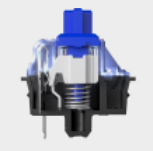
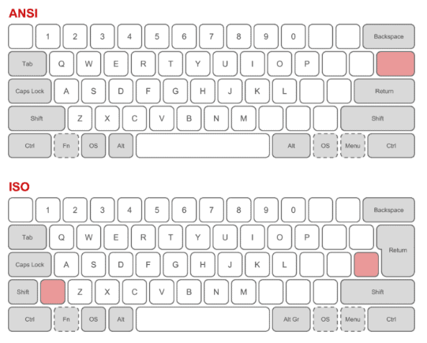
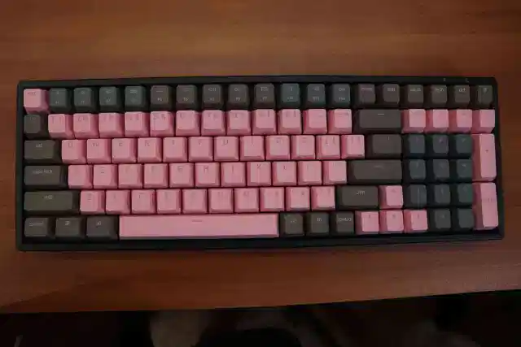
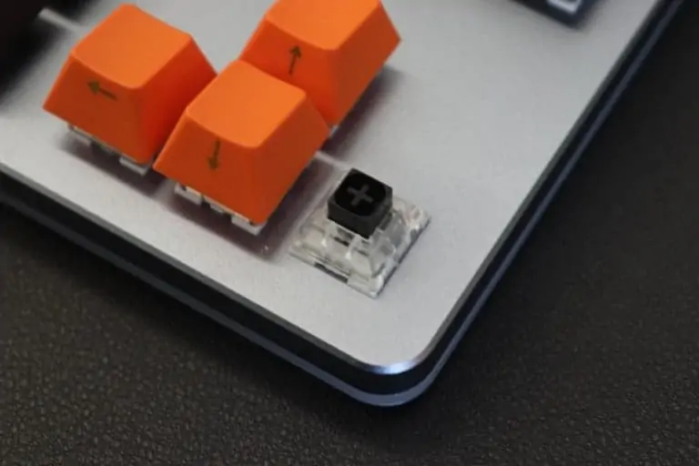
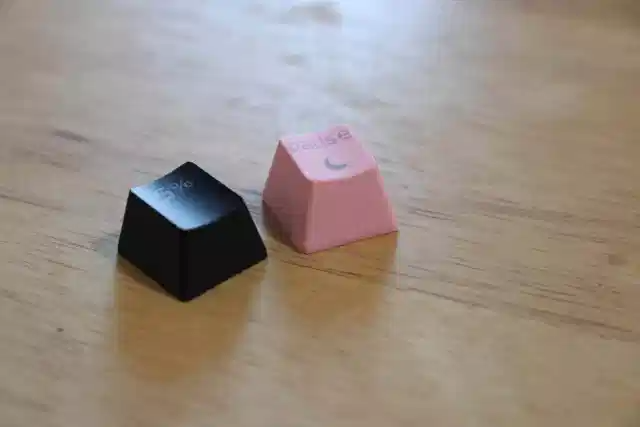

Welcome to University of Keyboards |
|---|
|
Found an interest in custom keyboards? Or are you simply interested to take a peek into the mind of a typical keyboard enthusiast? University of Keyboards is the first and last resource you will ever need to learn about keyboards. |
Check out our FREE courses |
MechanicalsBefore entering the world of custom keyboards, one should first understand the differences between mechanical keyboards and membrane keyboards. |
LayoutsIn this section, we will talk about the stark differences between ANSI and ISO layouts on mechanical keyboards. |
Keyboard SizesThere are many keyboard sizes and layouts available, but how do you tell the difference between them all? In this section we will talk about the different sizes and what makes each of them unique. |
Cases
Each material has its own look, feel, and weight to it, and can change the way each keystroke sounds when typing. On top of that, some materials are more durable and can last longer than others. Picking the right material comes down to personal preference and how much you are willing to spend. |
SwitchesUnderstanding all the different mechanical switch types can be quite confusing. When you really break it down, there are only three types of switches: linear, tactile, and clicky. |
KeycapsThis is arguably the most fun part for most people, because the keycaps contribute so much to the appearance of the final product. In the world of keycaps, there is really two main material types you can get. |
|
|---|